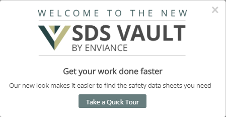
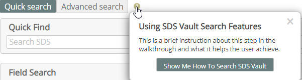
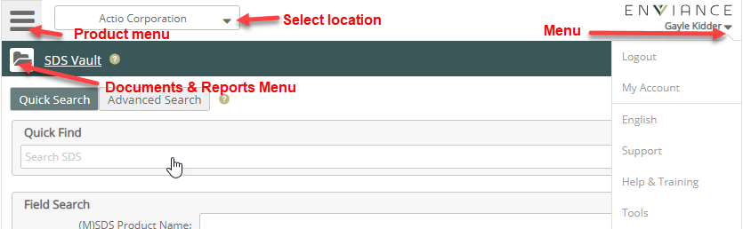
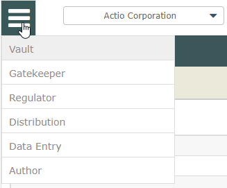
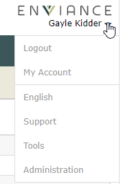
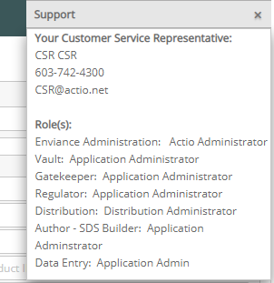
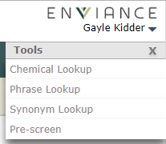
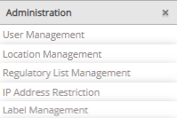
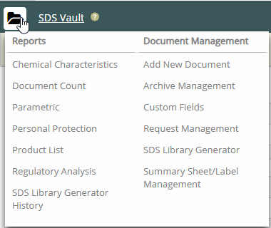

The Vault Search page is displayed by default after you signing. You can begin searching immediately using the Quick Search or click Advanced Search for a more extensive search. For more about searching, see Find SDS and Related Documents.
If you are new to SDS Vault you can access a walk-through of major features to guide you in getting started. A quick tour will be offered the first few times you sign in.

The help icons with a question mark "?" offer additional "show me" help.

Different drop-down menus are provided for specific purposes, as shown below.

Use the Product Menu button top left to switch to other products you have, including Gatekeeper and Regulator.

Use the Location drop-down next to the menu button to choose a location to work in. Select Expand/Contract All to view the complete hierarchy. SDS searches will use your current location by default.
Next to your name is an arrow that opens a menu for other features and functions.

My Account goes to your profile. See My Account for more information.
The language value (English in the above screenshot) is shown next. Select the language to change it, then select from the languages shown. See Change the Language for more information.
Support gives information about contacting Customer Service and a detail of the products and roles assigned to you.

Tools offers a sub-menu with the tools available to you. See Tools for more information.

Administration with its sub-menu of Administrative tasks is available only if you are an administrator. The options depend on your permissions. See Administration for more information.

Reports and Document Management are accessed by clicking the folder icon ( ) next to the product name (SDS Vault) in the green bar.
) next to the product name (SDS Vault) in the green bar.
